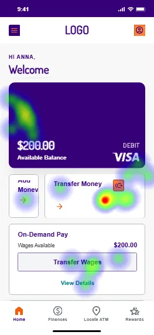
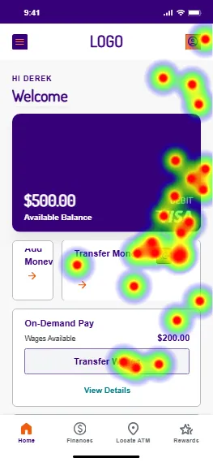
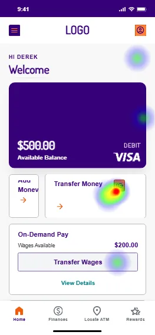
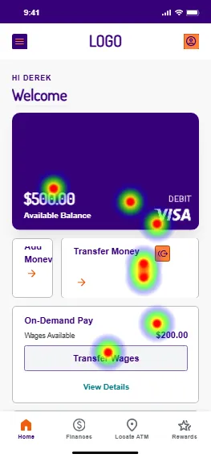
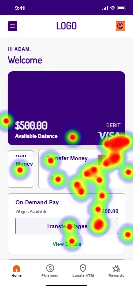
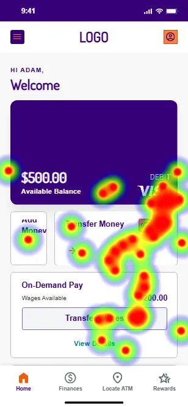
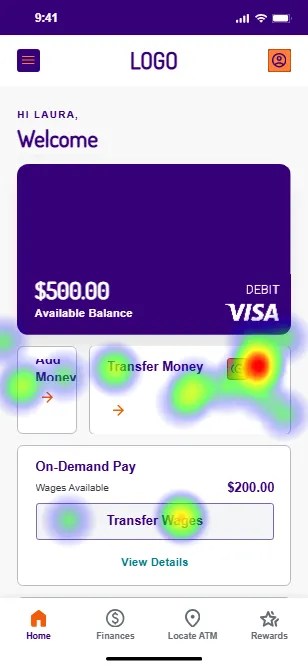
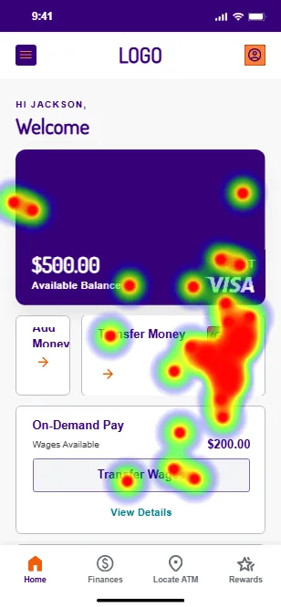
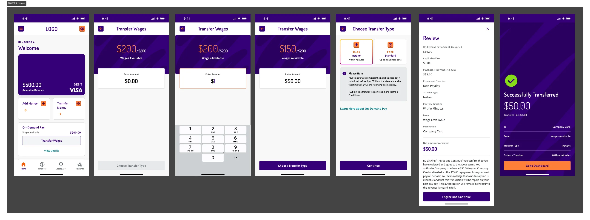
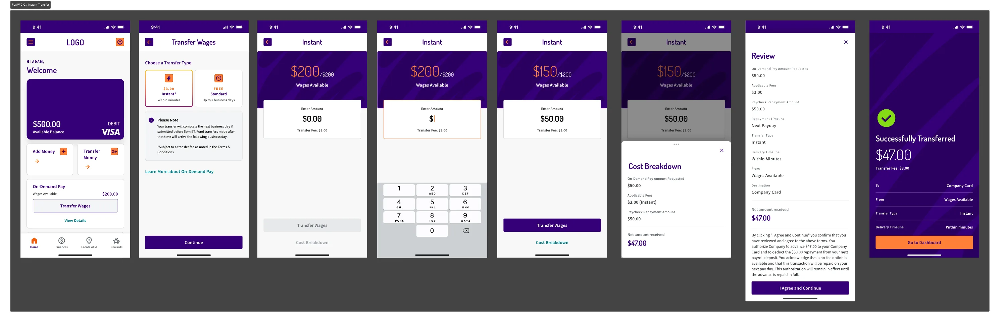

Instant wage transfer, understood.
What 25 mobile participants understood, and misunderstood, when moving wages they had already earned to a company paycard.
The transaction can be understood. The interface must make the math unmistakable.
Use E2 as the foundation
E2 produced the strongest normalized comprehension: users understood the amount received, fee, payroll repayment, remaining wages, timing and destination.
The starting action is not obvious
Participants consistently needed more than 3 taps before finding "Transfer Wages." "Transfer Money" competes directly with the intended entry point.
Show one financial equation
Keep "$50 received," "$3 fee," "$53 payroll repayment" and "$147 wages remaining" together at review and confirmation.
Recommended decision: combine E2's financial model with a redesigned entry point and a clearer confirmation hierarchy.
A directional comparison across five mobile experiences.
Transfer $50 from $200 of earned wages available to a company paycard for an urgent expense.
Which content, information order and interaction pattern best supports accurate comprehension?
Interpret results directionally. Variant groups ranged from 4 to 6 participants and were not designed for statistical winner selection.
Core transfer facts landed. Confirmation language remained the weakest point.
Users knew where and when
Destination and timing were the most consistently understood facts.
Different dollar labels compete
"Transferred," "received," "fee" and "repayment" need a stable vocabulary across review and confirmation.
Accuracy is normalized to the intended outcome of each variant. C2 intentionally delivered $47 from a $50 request; the other variants delivered $50. n = 25.
E2 was directionally strongest. No variant solved the entry point.
| Variant | n | Normalized comprehension | Clarity (of 7) | Ease (of 7) | Interpretation |
|---|---|---|---|---|---|
| E2 | 4 | 96% | 6.25 | 6.75 | Recommended foundation |
| A2 | 5 | 83% | 6.20 | 6.00 | Strong baseline |
| B2 | 6 | 76% | 5.83 | 6.50 | Breakdown useful, but not reliably seen |
| C2 | 6 | 76% | 5.33 | 5.67 | Requested $50, received $47 |
| D2 | 4 | 71% | 6.75 | 6.75 | Feels clear; arithmetic was not retained |
Rating is not comprehension. D2 was rated highest for clarity while only 2 of 4 identified the $53 repayment and 1 of 4 identified the $147 remaining.
Decision rule. Prioritize demonstrated comprehension over preference ratings when the design communicates financial consequences.
Normalized score combines 7 shared comprehension checks: card amount, payroll repayment, fee, remaining wages, timing, destination and confirmation amount. Small samples make rankings directional.
Participants knew they needed to transfer money, but not where to begin.








More than 3 taps
Participants consistently needed more than 3 taps before selecting "Transfer Wages."
Competing labels
"Transfer Money" and "Transfer Wages" both sound like valid ways to start.
Scattered intent
Clicks spread across the paycard, balances, "View Details" and surrounding areas.
Heatmaps show location, not click order or motivation. The repeated multi-click pattern is treated as a discoverability signal, not a precise measure of severity by variant.
E2 protects the user's goal: $50 requested means $50 arrives.

- $50 arrives on the company card.
- $3 is the instant-transfer fee.
- $53 is repaid from the next payroll deposit.
- $147 remains available after the transfer and fee.
- Funds arrive within minutes on the company card.
One participant recalled $53 as the transferred amount. Confirmation must separate the card credit from the payroll repayment more strongly.
A $50 request that delivers $47 works mathematically, but misses the urgent-expense goal.

The issue is expectation, not arithmetic
For an urgent $50 expense, receiving $47 leaves a $3 shortfall and may force another transfer.
Recommendation
Charge the fee on top of the requested amount and show the full consequence before agreement.
Data-quality note: one C2 follow-up question referenced a $50 confirmation even though the tested screen showed $47. That follow-up is excluded from interface conclusions.
Keep what explains consequences. Remove what makes users calculate.
- E2's fee-on-top model: request $50, receive $50
- Side-by-side Instant and Standard comparison
- Fee, timing and destination visible before agreement
- Review summary that includes payroll repayment
- Confirmation of card destination and availability
- Make "Transfer earned wages" the dominant entry CTA
- Rename "Transfer Money" to describe its distinct purpose
- Place all four dollar amounts in one consistent equation
- Separate "Added to card" from "Repaid from payroll"
- Make the review summary visible without opening a breakdown
- C2's pattern where $50 requested silently becomes $47 received
- Ambiguous "transferred" labels without a destination
- Timing notes that mix Standard and Instant expectations
- Reliance on an optional cost breakdown for essential information
- Equal visual weight for competing dashboard actions
One request. One equation. One unambiguous confirmation.
1 · Start
Primary CTA: "Transfer earned wages."
2 · Amount
Enter the amount needed on the card: $50.
3 · Speed
Instant $3, within minutes; or Standard $0, up to 2 business days.
4 · Review
Show the complete equation and next-payday timing.
5 · Confirm
Lead with "$50 added to your company card."
Use stable labels across every screen: requested amount, fee, amount added to card, payroll repayment and wages remaining.
Fix the entry point first, then validate the full financial story.
Redesign dashboard task entry
Make "Transfer earned wages" the primary action; rename and de-emphasize "Transfer Money"; validate the full tap target.
Adopt E2's amount model
The amount requested is the amount added to the card; the instant fee is charged on top.
Standardize financial language
Use the same 5 labels across amount entry, review, consent and confirmation.
Make essential math visible
Do not depend on an optional cost breakdown to communicate fee and payroll repayment.
Run a focused validation study
Test one consolidated flow with first-click success, comprehension and confidence as separate measures.
Proceed with an E2-based flow, after fixing entry-point discoverability and confirmation hierarchy.
Directional, not statistical
4 to 6 participants per variant cannot establish a definitive winner.
Recruitment was broader than intended
Only 15 of 25 were ages 25–44, and industry or hourly-work status was not captured.
iOS-heavy panel
21 participants used iOS and 4 used Android.